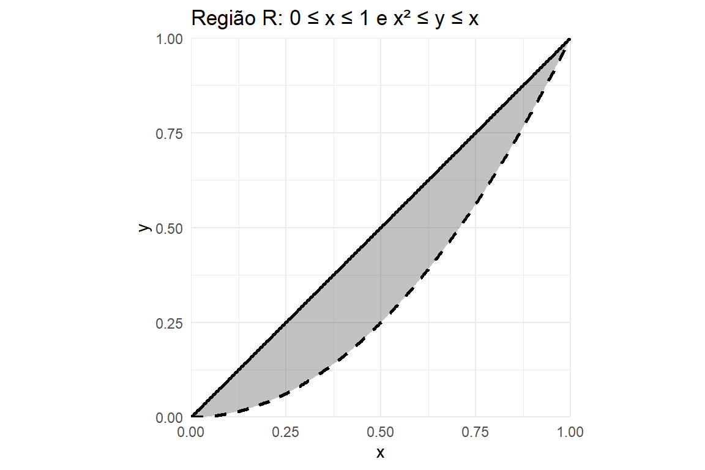
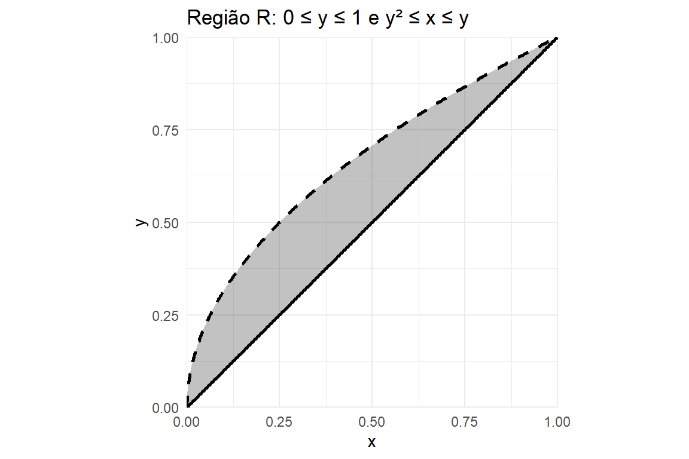
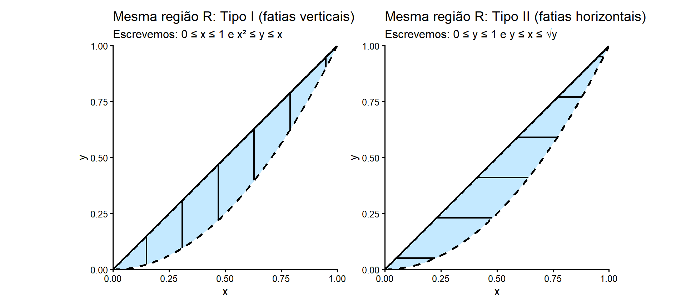
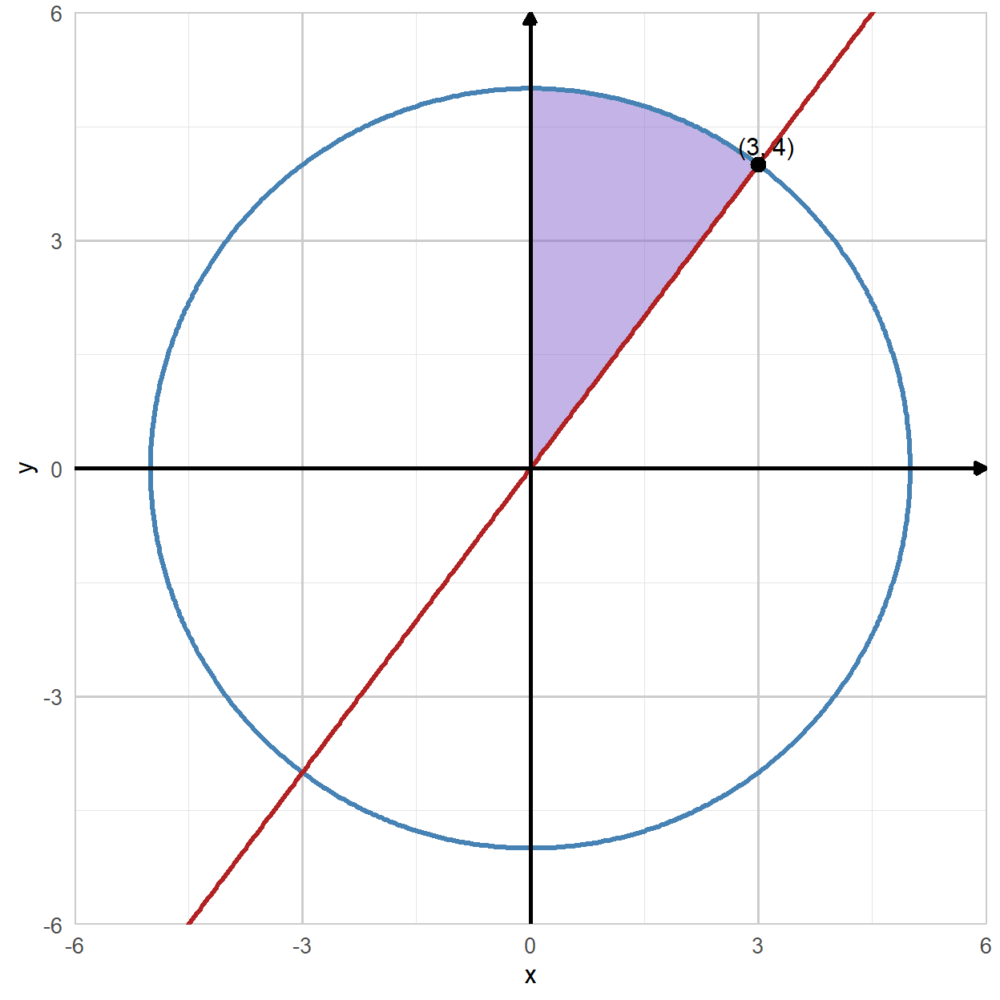
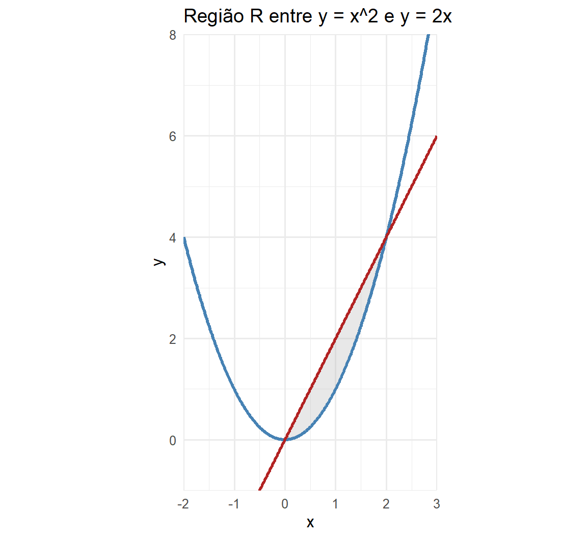
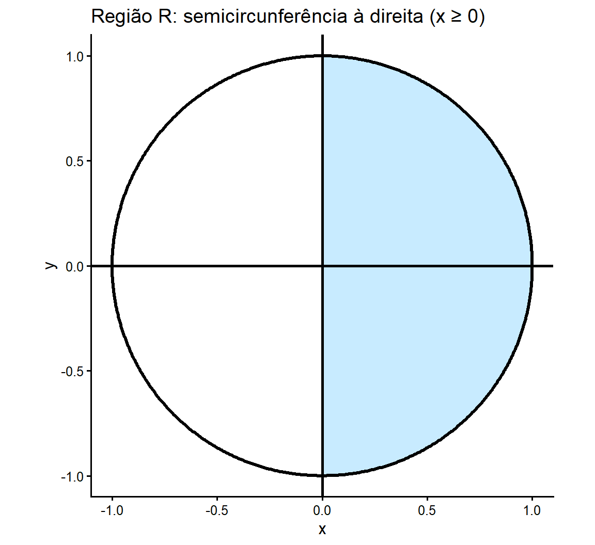
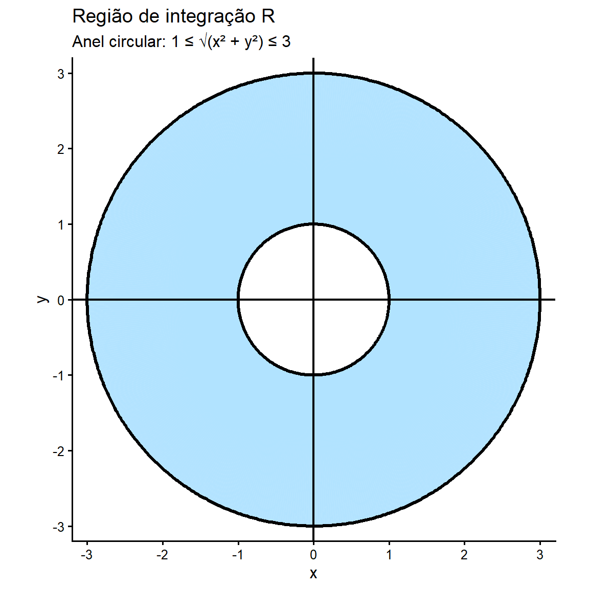

Integrais Duplas e Triplas
Introdução
Na teoria da probabilidade, especialmente quando lidamos com vetores aleatórios contínuos, as integrais múltiplas desempenham um papel central. Diferentemente do caso discreto, em que probabilidades são obtidas por somas, no caso contínuo as probabilidades são calculadas por integrais, que admitem uma interpretação geométrica natural como volumes sob superfícies.
Integrais Duplas
Seja \(f:\mathbb{R}^2 \to \mathbb{R}\) uma função não negativa e integrável em uma região \(R \subset \mathbb{R}^2\). A integral dupla de \(f\) sobre \(R\) é definida por
\[ \iint_R f(x,y)\,dA \]
Geometricamente, essa integral representa o volume do sólido limitado superiormente pela superfície \(z=f(x,y)\), inferiormente pelo plano \(z=0\) e lateralmente pela região \(R\).
Integrais Duplas

Aqui, \(R\) é a região sobre a qual integramos e \(dA\) é o elemento de área, uma versão infinitesimal de \(\delta A\).
Integrais Duplas
- \(dA\) depende das coordenadas. Em coordenadas cartesianas, temos:

Vemos claramente que \(\delta A = \delta x \delta y\), então, temos \(dA=dxdy\).
Integrais Duplas
Por conseguinte, esta integral é avaliada como:
\[ \iint_R f(x,y)\,dA = \iint_R f(x,y)\,dxdy \]
. . .
Na prática, integrais duplas são calculadas como integrais iteradas. Seja
\[ R=\{(x,y): a\le x\le b,\ c\le y\le d\} \]
Assim, pelo Teorema de Fubini, a integral é:
\[ \iint_R f(x,y)\,dx\,dy = \int_{y=c}^{d} \left( \int_{x=a}^{b} f(x,y)\,dx \right) dy = \int_{x=a}^{b} \left( \int_{y=c}^{d} f(x,y)\,dy \right) dx \]
Integrais Duplas
Primeiro, calculamos a integral interna e depois a integral externa. Neste caso, a integral interna é em relação a \(x\). No entanto, a ordem de integração não importa, pois podemos calcular a integral em relação a \(y\) primeiro.
Integrais Duplas
Exemplo 01: Calcule
\[ \iint_{[0,1]\times[0,1]} (x+y)\,dx\,dy \]
. . .
Solução: Como \([0,1]\times[0,1]\) é um retângulo, podemos escrever a integral dupla como uma integral iterada:
\[ \iint_{[0,1]\times[0,1]} (x+y)\,dx\,dy = \int_{0}^{1}\int_{0}^{1} (x+y)\,dx\,dy \]
Integrais Duplas
Passo 1: integrar em relação a \(x\)
Aqui \(y\) é constante. Então:
\[ \int_{0}^{1} (x+y)\,dx = \int_{0}^{1} x\,dx + \int_{0}^{1} y\,dx \]
Calculando cada parte:
\[ \int_{0}^{1} x\,dx = \left.\frac{x^2}{2}\right|_{0}^{1}=\frac12, \qquad \int_{0}^{1} y\,dx = y\int_{0}^{1} 1\,dx = y(1-0)=y \]
Integrais Duplas
Logo, a integral interna é: \[ \int_{0}^{1} (x+y)\,dx = \frac12 + y \]
. . .
Passo 2: integrar em relação a \(y\)
Agora integramos o resultado de \(0\) a \(1\):
\[ \int_{0}^{1}\left(\frac12+y\right)\,dy = \int_{0}^{1}\frac12\,dy+\int_{0}^{1}y\,dy \]
Integrais Duplas
\[ \int_{0}^{1}\frac12\,dy=\left.\frac{y}{2}\right|_{0}^{1}=\frac12, \qquad \int_{0}^{1}y\,dy=\left.\frac{y^2}{2}\right|_{0}^{1}=\frac12 \]
Somando: \[ \int_{0}^{1}\left(\frac12+y\right)\,dy=\frac12+\frac12=1 \]
Logo,
\[ \iint_{[0,1]\times[0,1]} (x+y)\,dx\,dy = 1 \]
Integrais Duplas
Exemplo 02: Na integral dupla seguinte, indicar a região \(R\) de integração e encontrar o seu valor:
\[ \int_{0}^{2}\int_{0}^{1} (1 + 2x + 2y)\,dy\,dx \]
. . .
Solução: A integral está escrita na forma iterada
\[ \int_{x=0}^{2}\int_{y=0}^{1} (\cdot)\,dy\,dx \]
Logo, a região de integração é
\[ R = \{(x,y)\in\mathbb{R}^2 : 0 \le x \le 2,\ 0 \le y \le 1\} \]
Integrais Duplas
Trata-se de um retângulo no plano cartesiano, com base no intervalo \([0,2]\) do eixo \(x\) e altura no intervalo \([0,1]\) do eixo \(y\). Assim, mantendo \(x\) fixo, temos:
\[ \begin{aligned} \int_{0}^{1} (1 + 2x + 2y)\,dy &= \int_{0}^{1} 1\,dy + \int_{0}^{1} 2x\,dy + \int_{0}^{1} 2y\,dy \\ & = y \bigg|_0^1 + 2x\,y \bigg|_0^1 + 2\dfrac{y^2}{2}\bigg|_0^1 \\ &= 1 + 2x + 1 \\ & = 2 + 2x \end{aligned} \]
Integrais Duplas
vamos agora, integrar em relação a \(x\):
\[ \begin{aligned} \int_{0}^{2} (2 + 2x)\,dx &= \int_{0}^{2} 2\,dx + \int_{0}^{2} 2x\,dx \\ & = 2x \bigg|_0^2 + 2\dfrac{x^2}{2}\bigg|_0^2 \\ &= 4 + 4 \\ & = 8 \end{aligned} \]
Integrais Duplas
Esse valor representa o volume do sólido limitado:
- inferiormente pelo plano \(z=0\),
- superiormente pela superfície \(z=1+2x+2y\),
- lateralmente pela região retangular \(R=[0,2]\times[0,1]\)
Integrais Duplas em Regiões Gerais
Até agora, consideramos integrais duplas sobre regiões retangulares. No entanto, em muitas aplicações, especialmente em Probabilidade, a região de integração não é um retângulo, mas sim uma região mais geral do plano.
. . .
Nesses casos, a integral dupla continua sendo definida como
\[ \iint_R f(x,y)\,dx\,dy, \]
mas o cálculo exige uma descrição adequada da região \(R\).
Regiões Gerais no Plano
Uma região geral \(R \subset \mathbb{R}^2\) é qualquer subconjunto do plano que possa ser descrito por desigualdades envolvendo \(x\) e \(y\).
. . .
Na prática, trabalhamos principalmente com dois tipos de regiões:
- Regiões do tipo I (ou regiões \(x\))
- Regiões do tipo II (ou regiões \(y\))
Regiões Gerais no Plano

Regiões do Tipo I (Regiões \(x\))
Uma região \(R\) é dita do tipo I se pode ser escrita na forma
\[ R = \{(x,y) : a \le x \le b,\ g_1(x) \le y \le g_2(x)\} \]
Nesse caso, a integral dupla é calculada como
\[ \iint_R f(x,y)\,dx\,dy = \int_a^b \int_{g_1(x)}^{g_2(x)} f(x,y)\,dy\,dx \]
Interpretação geométrica
- \(x\) varia em um intervalo fixo \([a,b]\);
- para cada \(x\), a variável \(y\) varia entre duas curvas.
Exemplo: Região do Tipo I
Considere a região limitada pelas curvas
\[ y = x^2 \quad \text{e} \quad y = x, \] com \(0 \le x \le 1\).
A região é
\[ R = \{(x,y): 0 \le x \le 1,\ x^2 \le y \le x\} \]
A integral dupla de \(f(x,y)\) sobre \(R\) é
\[ \iint_R f(x,y)\,dx\,dy = \int_0^1 \int_{x^2}^{x} f(x,y)\,dy\,dx \]
Exemplo: Região do Tipo I
Regiões do Tipo II (Regiões \(y\))
Uma região \(R\) é dita do tipo II se pode ser escrita como
\[ R = \{(x,y) : c \le y \le d,\ h_1(y) \le x \le h_2(y)\} \]
Nesse caso,
\[ \iint_R f(x,y)\,dx\,dy = \int_c^d \int_{h_1(y)}^{h_2(y)} f(x,y)\,dx\,dy \]
Interpretação geométrica
- \(y\) varia em um intervalo fixo \([c,d]\);
- para cada \(y\), a variável \(x\) varia entre duas curvas.
Exemplo: Região do Tipo II
Considere a região limitada por
\[ x = y^2 \quad \text{e} \quad x = y, \] com \(0 \le y \le 1\).
A região é
\[ R = \{(x,y): 0 \le y \le 1,\ y^2 \le x \le y\} \]
A integral dupla de \(f(x,y)\) sobre \(R\) é \[ \iint_R f(x,y)\,dx\,dy = \int_0^1 \int_{y^2}^{y} f(x,y)\,dx\,dy \]
Exemplo: Região do Tipo II

Troca da Ordem de Integração
Uma mesma região \(R\) pode, muitas vezes, ser descrita tanto como região do tipo I quanto do tipo II.
Trocar a ordem de integração significa reescrever
\[ \int_a^b \int_{g_1(x)}^{g_2(x)} f(x,y)\,dy\,dx \]
na forma
\[ \int_c^d \int_{h_1(y)}^{h_2(y)} f(x,y)\,dx\,dy, \]
mantendo a mesma região \(R\).
Troca da Ordem de Integração

Integrais Duplas em Regiões Gerais
Exemplo 03: Resolver a integral dupla
\[ \int_{0}^{3}\int_{4x/3}^{\sqrt{25-x^2}} x \, dy \, dx \]
. . .
Solução: Identificação da Região de Integração
A integral está na forma \[ \int_{x=0}^{3}\int_{y=4x/3}^{\sqrt{25-x^2}} (\cdot)\,dy\,dx \]
Integrais Duplas em Regiões Gerais
Logo, a região de integração é \[ R = \{(x,y)\in\mathbb{R}^2 : 0 \le x \le 3,\ \tfrac{4x}{3} \le y \le \sqrt{25-x^2}\} \]
ou seja, \(R\) é a região compreendida entre a reta \(y=\frac{4x}{3}\) e o círculo \(x^2+y^2=25\), no primeiro quadrante, conforme ilustrado na Figura. Nessa região, a interseção entre as duas curvas é o ponto \(P(3,4).\)
Integrais Duplas em Regiões Gerais
Integrais Duplas em Regiões Gerais
Como a função integranda é \(f(x,y)=x\), integramos primeiro em relação a \(y\), tratando \(x\) como constante:
\[ \begin{aligned} \int_{4x/3}^{\sqrt{25-x^2}} x\,dy &= x \int_{4x/3}^{\sqrt{25-x^2}} dy \\[6pt] &= x\,y\bigg|_{4x/3}^{\sqrt{25-x^2}} \\[6pt] &= x\left(\sqrt{25-x^2} - \frac{4x}{3}\right) \end{aligned} \]
Integrais Duplas em Regiões Gerais
Agora integramos em relação a \(x\): \[ \int_{0}^{3} x\left(\sqrt{25-x^2} - \frac{4x}{3}\right)\,dx = \int_{0}^{3} x\sqrt{25-x^2}\,dx - \frac{4}{3}\int_{0}^{3} x^2\,dx \]
Cálculo de \(\displaystyle \int_{0}^{3} x\sqrt{25-x^2}\,dx\)
Faça a substituição
\[ u = 25 - x^2 \quad \Rightarrow \quad du = -2x\,dx \] Quando \(x = 0 \rightarrow u = 25\) e quando \(x = 3 \rightarrow u = 16\).
Integrais Duplas em Regiões Gerais
Logo,
\[ \begin{aligned} \int_{0}^{3} x\left(\sqrt{25-x^2} - \frac{4x}{3}\right)\,dx &= -\frac12 \int_{25}^{16} \sqrt{u}\,du = \frac12 \int^{25}_{16} \sqrt{u}\,du \\[6pt] &= \frac12 \cdot \frac{2}{3}u^{3/2} \bigg|_{16}^{25} \\[6pt] &= \frac13 (25^{3/2}-16^{3/2}) \\[6pt] &= \frac13 \cdot (125 - 64) = \frac{61}{3} \end{aligned} \]
Integrais Duplas em Regiões Gerais
Cálculo de \(\dfrac43 \displaystyle \int_{0}^{3} x^2\,dx\)
\[ \dfrac43 \int_{0}^{3} x^2\,dx = \left.\dfrac43 \cdot \dfrac{x^3}{3}\right|_{0}^{3} = \dfrac43 \cdot 9 = 12 \]
Substituindo os resultados:
\[ \int_{0}^{3}\int_{4x/3}^{\sqrt{25-x^2}} x \, dy \, dx = \frac{61}{3} - 12 = \frac{25}{3} \]
Integrais Duplas em Regiões Gerais
Exemplo 04: Na integral do exemplo anterior, alterar a ordem de integração e indicar a integral resultante.
. . .
Solução: No exemplo anterior, tínhamos a integral
\[ \int_{0}^{3}\int_{4x/3}^{\sqrt{25-x^2}} x\,dy\,dx, \]
cuja região é
\[ R=\{(x,y): 0\le x\le 3,\ \tfrac{4x}{3}\le y\le \sqrt{25-x^2}\} \]
Integrais Duplas em Regiões Gerais
Para inverter a ordem, fixamos \(y\) e vemos como \(x\) varia.
No primeiro quadrante, para um \(y\) fixo, o limite à esquerda vem da reta \[ y=\frac{4x}{3}\ \Longleftrightarrow\ x=\frac{3y}{4}, \] e o limite à direita vem do círculo \[ x^2+y^2=25\ \Longleftrightarrow\ x=\sqrt{25-y^2}. \]
Integrais Duplas em Regiões Gerais

Integrais Duplas em Regiões Gerais
Quanto aos valores de \(y\) na região:
- o menor \(y\) ocorre em \((0,0)\): \(y=0\),
- o maior \(y\) ocorre no topo do semicírculo: \(y=5\).
Logo, a região pode ser descrita por \[ R=\left\{(x,y): 0\le y\le 5,\ \frac{3y}{4}\le x\le \sqrt{25-y^2}\right\} \]
Assim, a integral equivalente é \[ \int_{0}^{5}\int_{3y/4}^{\sqrt{25-y^2}} x\,dx\,dy \]
Integrais Duplas em Regiões Gerais
Calculando rapidamente: \[ \int_{0}^{5}\int_{3y/4}^{\sqrt{25-y^2}} x\,dx\,dy = \int_{0}^{5}\left[\frac{x^2}{2}\right]_{3y/4}^{\sqrt{25-y^2}}\,dy = \int_{0}^{5}\frac{1}{2}\left((25-y^2)-\frac{9y^2}{16}\right)dy \]
Simplificando: \[ \frac{1}{2}\left(25-y^2-\frac{9y^2}{16}\right) = \frac{1}{2}\left(25-\frac{25y^2}{16}\right) = \frac{25}{2}\left(1-\frac{y^2}{16}\right) \]
Integrais Duplas em Regiões Gerais
Então, \[ \int_{0}^{5}\frac{25}{2}\left(1-\frac{y^2}{16}\right)dy = \frac{25}{2}\left[y-\frac{y^3}{48}\right]_{0}^{5} = \frac{25}{2}\left(5-\frac{125}{48}\right) = \frac{25}{3} \]
Integrais Duplas em Regiões Gerais
Exemplo 05: Resolver \[ \iint_R x\,dA, \] onde \(R\) é a região entre as curvas \(y=2x\) e \(y=x^2\).
. . .
Solução: Região de integração \(R\)
Para encontrar os pontos de interseção, resolvemos \[ x^2 = 2x \;\;\Longleftrightarrow\;\; x(x-2)=0, \] logo, \[ x=0 \quad \text{ou} \quad x=2. \]
Integrais Duplas em Regiões Gerais
Para \(0<x<2\), temos \(2x > x^2\), então:
- curva superior: \(y=2x\),
- curva inferior: \(y=x^2\)
Assim, a região pode ser descrita como \[ R=\{(x,y): 0\le x\le 2,\ x^2 \le y \le 2x\} \]
Integrais Duplas em Regiões Gerais

Integrais Duplas em Regiões Gerais
Escrevendo a integral como integral iterada
Como \(R\) é do tipo I, temos
\[ \iint_R x\,dA = \int_{0}^{2}\int_{x^2}^{2x} x\,dy\,dx \]
Passo 1: integral interna (em relação a \(y\))
Como \(x\) é constante em relação a \(y\): \[ \int_{x^2}^{2x} x\,dy = x\int_{x^2}^{2x} dy = x\left[y\right]_{x^2}^{2x} = x(2x-x^2) \]
Integrais Duplas em Regiões Gerais
Passo 2: integral externa (em relação a \(x\))
\[ \int_{0}^{2} (2x^2-x^3)\,dx = \left[\frac{2x^3}{3}-\frac{x^4}{4}\right]_{0}^{2} = \frac{2\cdot 2^3}{3}-\frac{2^4}{4} = \frac{16}{3}-4 = \frac{16}{3}-\frac{12}{3} = \frac{4}{3} \]
Integrais Triplas
Seja \(f:\mathbb{R}^3 \to \mathbb{R}\) uma função não negativa e integrável em uma região \(V \subset \mathbb{R}^3\). A integral tripla
\[ \iiint_V f(x,y,z)\,dV \]
representa um hipervolume e é utilizada para modelar vetores aleatórios tridimensionais.
Integrais Triplas
Assim como no caso bidimensional, integrais triplas são avaliadas como integrais iteradas.
\[ \iiint_V f(x,y,z)\,dV = \iiint f(x,y,z)\, dx\,dy\,dz \]
com limites determinados pela geometria de \(V\).
Integrais triplas
Exemplo 06: Calcular a integral tripla \[ \iiint_B x y z^2 \, dV, \] em que \(B\) é a caixa retangular \[ B=\{(x,y,z)\in\mathbb{R}^3:\ 0\le x\le 1,\ -1\le y\le 2,\ 0\le z\le 3\} \]
. . .
Solução: Como \(B\) é uma caixa retangular, podemos escrever diretamente:
\[ \iiint_B x y z^2 \, dV = \int_{0}^{1}\int_{-1}^{2}\int_{0}^{3} x y z^2 \, dz \, dy \, dx \]
Integrais triplas
Passo 1: integrar em relação a \(z\)
Tratando \(x\) e \(y\) como constantes:
\[ \int_{0}^{3} x y z^2\,dz = xy\int_{0}^{3} z^2\,dz = xy\left[\frac{z^3}{3}\right]_{0}^{3} = xy\cdot \frac{27}{3} = 9xy \]
Passo 2: integrar em relação a \(y\)
Agora:
\[ \int_{-1}^{2} 9xy \, dy = 9x\int_{-1}^{2} y\,dy = 9x\left[\frac{y^2}{2}\right]_{-1}^{2} = 9x\left(\frac{4}{2}-\frac{1}{2}\right) = 9x\cdot\frac{3}{2} = \frac{27}{2}x \]
Integrais triplas
Passo 3: integrar em relação a \(x\)
Por fim:
\[ \int_{0}^{1} \frac{27}{2}x\,dx = \frac{27}{2}\left[\frac{x^2}{2}\right]_{0}^{1} = \frac{27}{2}\cdot\frac{1}{2} = \frac{27}{4} \]
Logo, \[ \iiint_B x y z^2 \, dV = \frac{27}{4} \]
Integrais triplas
Exemplo 07: Calcule a integral tripla \[ \iiint_G 12xy^2 z^3\, dV, \] na caixa retangular \[ G=\{(x,y,z)\in\mathbb{R}^3:\ -1\le x\le 2,\ 0\le y\le 3,\ 0\le z\le 2\} \]
. . .
Solução: Como \(G\) é uma caixa retangular, podemos escrever: \[ \iiint_G 12xy^2 z^3\, dV = \int_{-1}^{2}\int_{0}^{3}\int_{0}^{2} 12xy^2 z^3\, dz\, dy\, dx \]
Integrais triplas
Passo 1: integrar em relação a \(z\)
Tratando \(x\) e \(y\) como constantes: \[ \int_{0}^{2} 12xy^2 z^3\, dz = 12xy^2 \int_{0}^{2} z^3\,dz = 12xy^2\left[\frac{z^4}{4}\right]_{0}^{2} =12xy^2\cdot \frac{16}{4} = 12xy^2\cdot 4 = 48xy^2 \]
Passo 2: integrar em relação a \(y\)
Agora:
\[ \int_{0}^{3} 48xy^2\,dy = 48x\int_{0}^{3} y^2\,dy = 48x\left[\frac{y^3}{3}\right]_{0}^{3} = 48x\cdot \frac{27}{3} = 48x\cdot 9 = 432x \]
Integrais triplas
Passo 3: integrar em relação a \(x\)
Por fim:
\[ \int_{-1}^{2} 432x\,dx = 432\int_{-1}^{2} x\,dx = 432\left[\frac{x^2}{2}\right]_{-1}^{2} = 432\left(\frac{4}{2}-\frac{1}{2}\right) = 432\cdot\frac{3}{2} = 648 \]
Logo, \[ \iiint_G 12xy^2 z^3\, dV = 648 \]
Mudança de Variáveis em Integrais Múltiplas
Em muitos problemas, a região de integração é complicada no sistema original de coordenadas. A mudança de variáveis permite transformar a integral para um novo sistema mais conveniente.
Seja
\[ (x,y)=T(u,v), \]
onde \(T\) é uma transformação diferenciável e bijetiva. Então,
\[ \iint_D f(x,y)\,dx\,dy = \iint_{D^*} f(T(u,v))\,|J(u,v)|\,du\,dv, \]
onde \(J(u,v)\) é o Jacobiano da transformação.
O Jacobiano
Para \[ x=x(u,v),\quad y=y(u,v), \] define-se o Jacobiano por
\[ J= \begin{vmatrix} \dfrac{\partial x}{\partial u} & \dfrac{\partial x}{\partial v} \\ \dfrac{\partial y}{\partial u} & \dfrac{\partial y}{\partial v} \end{vmatrix} \]
. . .
O Jacobiano mede o fator de distorção de área causado pela transformação:
\[ dx\,dy = |J(u,v)|\,du\,dv \]
Integral Dupla em Coordenadas Polares
Observe que:

No sistema de coordenadas polares, temos \[ x=x(r,\theta)=r\cos\theta \quad \text{e} \quad y=y(r,\theta)=r\,\text{sen }\theta \]
Integral Dupla em Coordenadas Polares
O jacobiano da transformação é \[ \begin{aligned} J(r,\theta) &= \left| \begin{matrix} \dfrac{\partial x}{\partial r} & \dfrac{\partial x}{\partial \theta}\\[6pt] \dfrac{\partial y}{\partial r} & \dfrac{\partial y}{\partial \theta} \end{matrix} \right| = \left| \begin{matrix} \cos\theta & -r\,\text{sen }\theta\\ \text{sen }\theta & r\cos\theta \end{matrix} \right| \\[6pt] &= (\cos\theta)(r\cos\theta)-(-r\,\text{sen }\theta)(\text{sen }\theta) \\[6pt] &= r\cos^2\theta+r\,\text{sen}^2\,\theta = r(\cos^2\theta+\text{sen}^2\,\theta) = r \end{aligned} \]
Integral Dupla em Coordenadas Polares
Logo, pelo teorema de mudança de variáveis, se \(T(r,\theta)=(r\cos\theta,r\,\text{sen }\theta)\), então
\[ \iint_R f(x,y)\,dA = \iint_S f\big(x(r,\theta),y(r,\theta)\big)\,|J(r,\theta)|\,dr\,d\theta \]
Como \(|J(r,\theta)|=r\), obtemos a forma operacional:
\[ \iint_R f(x,y)\,dA = \iint_S f(r\cos\theta,r\,\text{sen }\theta)\,r\,dr\,d\theta \]
Integral Dupla em Coordenadas Polares
Exemplo 08: Calcule \[ \iint_R (x-y)\,dA, \] sendo \(R\) o semi-círculo de centro na origem e raio \(1\) (isto é, a região \(x^2+y^2\le 1\) com \(x\ge 0\)).

Integral Dupla em Coordenadas Polares
Solução: Em coordenadas polares: \[ x=r\cos\theta,\qquad y=r\,\text{sen }\theta,\qquad dA=dx\,dy=r\,dr\,d\theta \]
. . .
Assim, o integrando fica:
\[ x-y = r\cos\theta - r\,\text{sen }\theta = r(\cos\theta-\text{sen }\theta) \]
. . .
Como \(R\) é o semicírculo superior de raio \(1\), temos \[ 0\le r\le 1,\qquad -\dfrac{\pi}{2}\le \theta\le \dfrac{\pi}{2} \]
Integral Dupla em Coordenadas Polares
De forma que,
\[ \iint_R (x-y)\,dA = \int_{-\frac{\pi}{2}}^{\frac{\pi}{2}}\int_{0}^{1} r(\cos\theta-\text{sen }\theta)\,r\,dr\,d\theta = \int_{-\frac{\pi}{2}}^{\frac{\pi}{2}}\int_{0}^{1} r^2(\cos\theta-\text{sen }\theta)\,dr\,d\theta \]
. . .
Integrando em relação a \(r\)
\[ (\cos\theta-\text{sen }\theta) \int_{0}^{1} r^2\,dr = (\cos\theta-\text{sen }\theta) \left.\frac{r^3}{3}\right|_{0}^{1}=\frac{1}{3} (\cos\theta-\text{sen }\theta) \]
Integral Dupla em Coordenadas Polares
Integrando em relação a \(\theta\)
\[ \begin{aligned} \int_{-\frac{\pi}{2}}^{\frac{\pi}{2}}\frac{1}{3}(\cos\theta-\text{sen }\theta)\,d\theta &= \frac13 \int_{-\frac{\pi}{2}}^{\frac{\pi}{2}}\cos\theta\,d\theta - \frac13 \int_{-\frac{\pi}{2}}^{\frac{\pi}{2}} \text{sen }\theta\,d\theta \\[6pt] &= \frac13 \text{sen }\theta \bigg|_{-\frac{\pi}{2}}^{\frac{\pi}{2}} + \frac13 \cos\theta\bigg|_{-\frac{\pi}{2}}^{\frac{\pi}{2}} \\[6pt] &= \frac13 \Bigg(\text{sen }\bigg(\frac{\pi}{2}\bigg) - \text{sen } \bigg(-\frac{\pi}{2}\bigg)\Bigg) + \frac13 \Bigg(\cos \bigg(\frac{\pi}{2}\bigg) - \cos \bigg(-\frac{\pi}{2}\bigg)\Bigg) \\[6pt] &= \frac13 \cdot (1 - (-1)) + \frac13(0-0) = \frac23 \end{aligned} \]
Integral Dupla em Coordenadas Polares
Exemplo 09: Calcule \[ \iint_R \sqrt{x^2+y^2}\,dA, \] sendo \(R\) a região delimitada por \(x^2 + y^2 = 1\) e \(x^2 + y^2 = 9\).

Integral Dupla em Coordenadas Polares
Solução: Em coordenadas polares:
\[ x=r\cos\theta,\qquad y=r\,\text{sen }\theta,\qquad dA=dx\,dy=r\,dr\,d\theta \]
Além disso, \[ \sqrt{x^2+y^2}=\sqrt{r^2}=r \quad (r\ge 0) \]
Como \(R\) é um anel completo, os limites são: \[ 1\le r\le 3,\qquad 0\le \theta\le 2\pi \]
Integral Dupla em Coordenadas Polares
Assim, \[ \iint_R \sqrt{x^2+y^2}\,dA = \int_{0}^{2\pi}\int_{1}^{3} r\cdot r\,dr\,d\theta = \int_{0}^{2\pi}\int_{1}^{3} r^2\,dr\,d\theta \]
Integral em \(r\)
\[ \int_{1}^{3} r^2\,dr = \left.\frac{r^3}{3}\right|_{1}^{3} = \frac{27-1}{3} = \frac{26}{3} \]
Integral em \(\theta\)
\[ \int_{0}^{2\pi} \frac{26}{3} d\theta = \frac{26}{3} \int_{0}^{2\pi} d\theta = \frac{26}{3} \cdot \theta \bigg|_0^{2\pi} = \frac{52 \pi}{3} \]